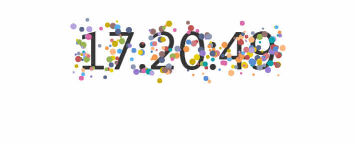
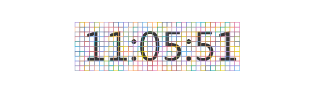

原文连接:https://www.cnblogs.com/dashnowords/p/10878409.html

示例代码托管在：http://www.github.com/dashnowords/blogs
博客园地址：《大史住在大前端》原创博文目录
华为云社区地址：【你要的前端打怪升级指南】
一. 文字烟花
文字烟花的小控件是下面这样的效果，你或许在很多个人博客中见过：

这一节我们就来讲述一下这个小动画的实现方法。
二. 动画原理
首先动画的主框架仍然是我们反复使用的逐帧动画框架，烟花生成以后的部分也不难理解，我们之前已经对物理碰撞进行过仿真，这里实际上就是模拟了带有初速度的自由落体。所以这个小动画里唯一的难点，就是如何根据文字生成烟花，只要做到这一步，其他的部分都比较容易实现。
2.1 像素操作
这里就要用到canvas像素操作的API——context.getImageData( )了，它可以将画布上指定矩形区域以像素点的形式返回回来，像素数据挂载在返回对象的data属性上，它是一个一维的Uint8ClampedArray定型数组，每个值只能取0-255之间的整数，如果赋值超过这个范围，则自动修改为[0,255]而不会报错。这个一维数组是矩形区域的像素点数据逐行拼接在一起的，每4个点代表一个像素点的RGBA的颜色数据，最后一个通道是透明度数据，例如一个红色的像素点的数据就是[...,255,0,0,0....]。比如你截取了一个长为200像素高为10像素的矩形区域的数据点，那么就会得到一个200*10*4=8000个数据点的数组。
这是canvas非常重要的一个API，它的应用场景非常多，例如结合WebRTC输入的流数据来做视频弹幕，或者使用算法对像素数据进行加工实现各种各样的图片滤镜等，还可以使用离屏canvas来进行性能提升，具体的应用就留给你自己去探索喽。
2.2 烟花生成算法
获取到像素数据后，我们就可以对其进行分析，分析算法如下：

- 将要获取像素的部分分成大小适中的网格，网格太小则渲染压力大，网格太大动画效果不好。
- 遍历每一个网格，取出小方块区域内所有像素点，也可以一次性读取整个区域的像素点然后按小区域来取用，然后统计其中
dirty的像素点数量（判断其对应的颜色值是否都为255，如果不是则判定为dirty），如果区域内脏点的比例超过一定阈值（示例中为60%）则判定该区域需要被烟花点替换。 - 在需要生成烟花的区域以随机大小和颜色生成一个小球，并根据其位置指定水平初速度的方向，小球均受到竖直向下的重力影响。
- 在帧动画中更新小球状态。
2.3 计时器
最后，我们还需要一个新的timer对象，之前我们接触到的精灵动画大都是连续的，每一帧都需要进行状态更新，而本节中时间文字的更新是离散的，一秒钟才更新一次，烟花由于有动画过程，也不太适合每秒都生成。所以我们需要在timer中实现一个内部计时器，每1秒更新一次渲染文字，每2秒触发一次。如果对时间精度要求较高，可以记录时间戳进行比对，如果精度要求不高，可以在update方法中递增直接对更新周期进行取模即可。
Timer类的定义如下：
//计时器类
class Timer{
constructor(){
this.lastTime = Date.now(); //初始化的时候记录一次时间
this.label = new Date(this.lastTime).Format('hh:mm:ss');//Format是自定义的格式化方法
this.step = 0;//标记是否刷新时间文字
this.shouldAnim = 0;//标记是否需要生成新的烟花
}
update(){
this.step = (this.step + 1) % 60;//时间文字每60帧刷新一次
this.shouldAnim = (this.shouldAnim + 1) % 120;//烟花每120帧生成一次
if (!this.step) {
this.lastTime = Date.now();
this.label = new Date(this.lastTime).Format('hh:mm:ss');
}
}
paint(ctx){
context.fillStyle = "#353535";
ctx.fillText(this.label, 200, 100);
}
}主框架部分的代码已经讲过非常多次，本文不再赘述。